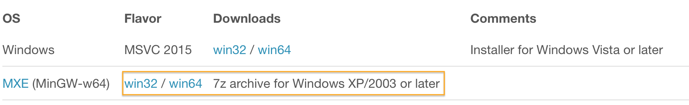

开发中经常会需要输出报表，方法很多，这里就不一一去列举对比各种方法的优缺点，只介绍使用字符串模板输出 PDF 报表的方式，能够满足绝大多数时候的需求:
字符串模板 + 数据输出 HTML- HTML 输出 PDF
输出 HTML
为了生成 HTML，可以在程序中使用字符串拼接的方式，但这种方式对于复杂点的 HTML 就会非常麻烦，不推荐使用，我们这里将使用字符串模板引擎 Inja 来生成 HTML，使用步骤如下:
下载 Inja
解压，得到的目录结构如下:
1
2
3
4
5
6
7
8
9
10inja-2.1.0
...
├── single_include
│ └── inja
│ └── inja.hpp
└── third_party
└── include
└── nlohmann
├── LICENSE.MIT
└── json.hpp复制 single_include 下的
inja目录和 third_party/include 下的nlohmann目录到项目的lib目录下:1
2
3
4
5
6lib
├── inja
│ └── inja.hpp
└── nlohmann
├── LICENSE.MIT
└── json.hppQt 工程的 pro 文件中添加包含路径:
INCLUDEPATH += lib最简单的例子:
1
2
3
4
5
6
7
8
9
10
11
12
13
using namespace inja;
using json = nlohmann::json;
int main(int argc, char *argv[]) {
json data;
data["name"] = "world";
render("Hello {{ name }}", data); // Returns std::string "Hello world"
return 0;
}Inja 的模板使用了 Mustache 风格的语法，上面例子中
{ { name } }被data["name"]的值world替换掉，生成字符串Hello world，其中 Inja 使用 JSON 库 nlohmann json 传递数据给模板。
到这里我们能够使用 Inja 把字符串模板+数据生成最终的字符串了，实际项目中的报表一般都比较大，还有复杂的样式，如果直接在程序里使用字符串拼接模板，如要生成下面这样的报表想想会有多不容易：
- 使用 HTML 进行设计，调整效果直到满意
- 把变化的部分按照 Inja 的语法替换为
{ { variable } }，得到模板，保存到可执行文件 (exe) 所在目录的 template 目录下的report.html - 程序中准备模板需要的数据
- 使用 Inja 生成最终的 HTML
模板文件 template/report.html:
1 |
|
map.cpp:
1 |
|
输出 PDF
Qt 里输出 HTML 为 PDF 可以借助 QWebEngineView & QWebEnginePage:
1 | ui->webView->page()->printToPdf(filePath); |
但是 Windows 中只有 VS 的 Qt 支持 Qt Web Engine，MinGW 的 Qt 不支持，甚至 Qt 5.5 后 Qt Web Kit 模块也被删除了，再加上 QTextDocument 输出 PDF 不支持 class 样式，只支持内联的 style 样式，导致开发 HTML 模板困难，鉴于这些原因，我们这里使用开源库 wkhtmltopdf 来把 HTML 转为 PDF:
下载 7z 压缩版，选择 win32 的，因为 MinGW 目前只有 32 位的:
 解压，得到的目录结构如下:
1
2
3
4
5
6
7
8
9
10
11
12wkhtmltox
├── bin
│ ├── libwkhtmltox.a
│ ├── wkhtmltoimage.exe
│ ├── wkhtmltopdf.exe
│ └── wkhtmltox.dll
└── include
└── wkhtmltox
├── dllbegin.inc
├── dllend.inc
├── image.h
└── pdf.h复制 include 下的
wkhtmltox目录到项目的lib目录下:1
2
3
4lib
├── wkhtmltox
│ └── pdf.h
│ ├── ...复制
wkhtmltox.dll到可执行文件 (exe) 目录Qt 工程的 pro 文件中添加包含路径:
INCLUDEPATH += libQt 工程的 pro 文件中添加 DLL 路径:
LIBS += -L$$OUT_PWD/debug -lwkhtmltox(根据具体的情况而定)使用下面的代码把 HMTL 内容转为 PDF:
1
2
3
4
5
6
7
8
9
10
11
12
13
14
15
16
17
18
19
20
21
22
23
24
25
26
27
28
29
30
31
32
33
34
35
36
37
int main(int argc, char *argv[]) {
QApplication app(argc, argv);
QTextCodec::setCodecForLocale(QTextCodec::codecForName("UTF-8"));
wkhtmltopdf_global_settings * gs;
wkhtmltopdf_object_settings * os;
wkhtmltopdf_converter * c;
wkhtmltopdf_init(false);
gs = wkhtmltopdf_create_global_settings();
os = wkhtmltopdf_create_object_settings();
c = wkhtmltopdf_create_converter(gs);
// 设置输入输出
wkhtmltopdf_set_object_setting(os, "page", "input.html");
wkhtmltopdf_set_global_setting(gs, "out", "output.pdf");
wkhtmltopdf_add_object(c, os, nullptr);
/* Perform the actual conversion */
if (!wkhtmltopdf_convert(c)) {
fprintf(stderr, "Conversion failed!");
} else {
fprintf(stdout, "Conversion finished!");
}
wkhtmltopdf_destroy_converter(c);
wkhtmltopdf_deinit();
return 0;
}第 22 行设置 HTML 的文件路径，第 23 行设置输出的 PDF 路径。如果想直接把 HTML 的字符串转为 PDF，把第 22 行 HTML 文件路径换为前缀
data:text/html,+html content:1
2QString html = "data:text/html,<html><head><meta charset=\"UTF-8\"></head><body>Hello</body><html>";
wkhtmltopdf_set_object_setting(os, "page", html.toUtf8().constData());关于上面代码详细的注释请阅读 examples/pdf_c_api.c。
提示:
- 默认输出 PDF 为竖版的 (即 Portrail)，如果要输出为横版的 (Landscape)，需要设置
wkhtmltopdf_set_global_setting(gs, "orientation", "Landscape");- 要支持 CSS3 的 transition 如 rotate 的话，需要
webkit前缀:-webkit-transform: rotate(30deg);- 本地图片可以使用 Base64 格式，或者本地图片的绝对路径
- 更多配置请参考
- 生成的 PDF 中可以使用 CSS 强制插入页:
.pdf-new-page { page-break-before: always !important; }<h2 class="pdf-new-page">灭菌图像</h2>- 这样 灭菌图像 就会从新的一页开始
本文介绍了使用 Inja + wkhtmltopdf，使用模板 + 数据的方式生成 PDF 报表，只要提高一下我们写 HTML 的技术，就能够很容易的生成漂亮的报表了。